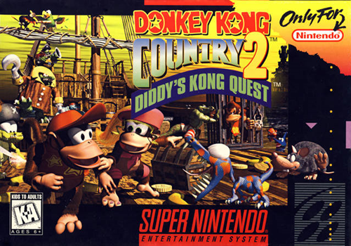
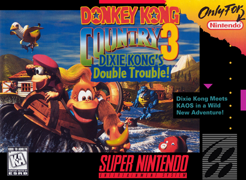
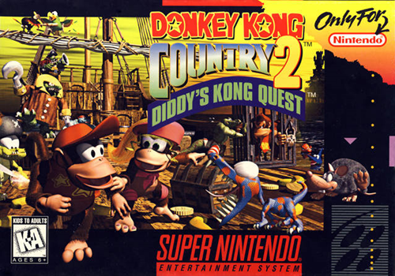
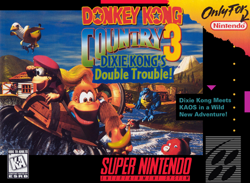

Data de nascimento: 07/1990
Cidade que reside: Fernandópolis - SP
Murilo é formado em biomedicina pela FEF com pós-graduação em biologia molecular em ciências da saúde pela FAMERP de São José do Rio Preto. Desde os 12 anos de idade é músico e se profissionalizou nunca atuando na área em que fez faculdade. Trabalhou de moto-boy em Fernandópolis de 2014 a 2016, quando passou no Conservatório Dramático e Musical de Tatuí, no curso de saxofone de concerto, ou, saxofone erudito. Com a pandemia em 2020, Murilo entrou em transição de carreira para a tecnologia começando a fazer um bootcamp de Desenvolvimento Web Full-Stack e vendeu sua moto para comprar um computador para começar a programar! Veja em Habilidades o que eu já vi em linguagens de programação!
O que gosto
Como sou da Geração Z meus gostos acredito que são um pouco mais velhos que a maioria da sala. Filmes dos anos 90 e começo dos anos 00, onde tive a chance de, quando criança, acompanhar grandes lançamentos como: O senhor dos anéis, Titanic, Matrix e sempre fui apaixonado por filmes de animação e desenho. Meu primeiro filme quando fui ao cinema foi com 5 anos de idade e fui assistir Toy Story, amante de um bom anime também, até hoje me encontro acompanhando muitas histórias do mundo nipônico! Já em jogos, sempre fui apaixonado, meus primos compraram um atari uma vez e vi eles jogando Pac-man, tentei e fui péssimo! Acho porque não tinha noção nenhuma com o joystick na época também, me mudava muito de cidade quando criança por conta da profissão do meu pai na época, então meus pais, com medo de deixar o filho sair na rua encontrar algo perigoso, comprou um Super Nintendo e desde os meus 4 anos fiquei encantando com o mundo do Mario. Logo veio vários outros jogos até meados de 00 começar os jogos de computador e ai o resto é história!
- Filmes:
- Shrek 1, 2 e 3
- Matrix / Reloaded e Revolutions
- Brilho eterno de uma mente sem lembranças
- Show de truman
- Jogos:
- Super Mario World
- Super Metroid
- LoL
- Donkey Kong


 


